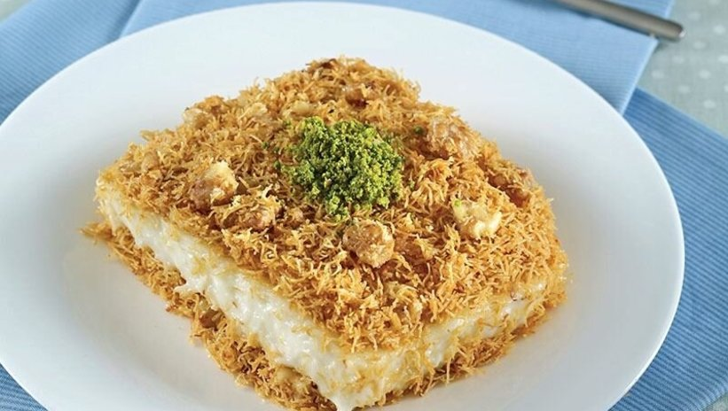

Kısa Bilgi
Kadayıfların kolay bir şekilde kırılması ve doğranması için, 2 saat kadar dondurucuda bekletmelisiniz.
Muhallebinin ununu kavururken, dikkatli olmalı ve gereğinden fazla kavurmamalısınız.
Kavurduğunuz unun üzerine süt ekledikten sonra, topaklanma olmaması için, sürekli karıştırarak pişirmelisiniz.
Pişen muhallebiyi ocaktan aldıktan sonra yapılan mikser ile çırpma işlemi, muhallebinin kıvamını güzelleştirecek ve kabuk tutmadan soğumasına yardımcı olacaktır.
Eğer üstteki kadayıfların yumuşamasını istemiyorsanız, servis edeceğiniz zamana yakın muhallebinin üzerine serpmelisiniz. Ancak çıtır olmasını istemiyorsanız, dolaba koymadan önce serpmeli ve dinlenmeye bırakmalısınız.
Gereken Malzemeler
Kadayıfı İçin
- 250 gram tel kadayıf
- 100 gram tereyağı
- 5 yemek kaşığı toz şeker
- 1 su bardağı kırık ceviz
Muhallebisi İçin
- 125 gr. tereyağı
- 1 su bardağı un
- 1 litre süt
- 1 su bardağı toz şeker
- 1 paket vanilin
Nasıl Yapılır
- Tel kadayıflarımızı, küçük küçük doğrayalım.
- Tavamıza tereyağımızı alalım, eritelim.
- Üzerine toz şekeri alalım ve karıştıralım.
- Kadayıflarımızı da üzerine ilave ederek, renkleri dönene kadar kavuralım.
- Rengi altın sarısına dönen kadayıflarımızın üzerine, dövülmüş cevizi ekleyelim ve karıştıralım.
- Kavrulan kadayıflarımızı ocaktan alalım ve soğumaya bırakalım.
- Muhallebisi için, tencereye tereyağını alarak eritelim.
- Üzerine unu ilave edelim ve rengi değişip, kokusu çıkana kadar kontrollü bir şekilde kavuralım.
- Daha sonra üzerine süt ve şekeri ilave edelim.
- Karıştırarak, koyulaşana kadar pişirelim.
- Muhallebiyi ocaktan aldıktan sonra, içerisine vanilyayı ekleyelim ve mikserle 3-4 dakika çırpalım.
- Kavurduğumuz kadayıfların yarısını, kare borcamımızın tabanına her yerine gelecek şekilde yayalım.
- Üzerine muhallebimizi boşaltalım ve tatlımız oda ısısına geldikten sonra, üzerine kalan kadayıflarımızı eşit bir şekilde yayalım.
- En az 3-4 saat buzdolabında dinlenen tatlımız servise hazır. Afiyet olsun!